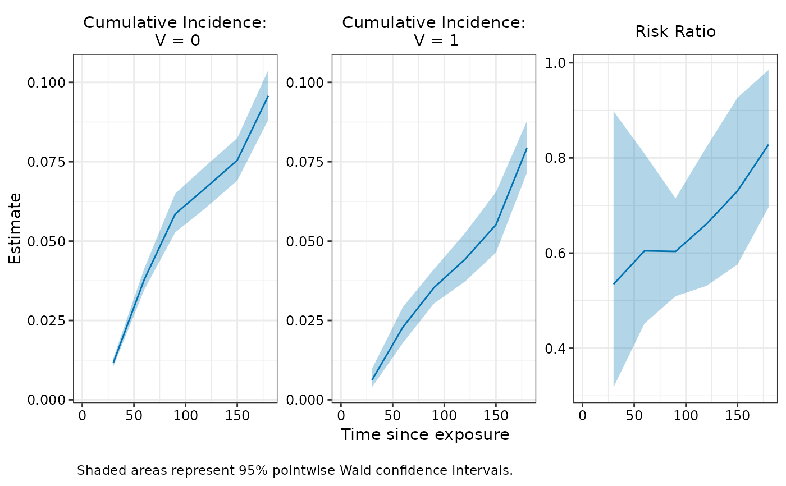

Create a panel plot of cumulative incidence and effectiveness estimates across all evaluation time points.
Arguments
- x
An object of class
nomatchfitcreated bynomatch()ormatching().- effect
The effect measure to plot next to the cumulative incidence plots. Either
"risk_ratio"(default),"relative_risk_reduction"or"risk_difference".- ci_type
Character string specifying the type of confidence interval band to plot. By default,
"wald"if available, otherwise set to"percentile"ornone. One of"wald", "percentile", "simul", or"none". Must choose aci_typewhose lower and upper bounds are already computed inestimatescomponent ofx.- color
Aesthetic value to map data values to. Default:
"#0072B2"(blue)- ...
Additional arguments (currently ignored).
Value
a ggplot2 object with three faceted panels (for cumulative incidences and the chosen effect measure)
Details
For cumulative incidence panels, y-axis limits are shared across methods to facilitate comparison. The VE panel uses free y-axis scaling.
Examples
fit <- nomatch(
data = simdata,
outcome_time = "Y",
outcome_status = "event",
exposure = "V",
exposure_time = "D_obs",
covariates = c("x1", "x2"),
timepoints = seq(30, 180, by = 30),
immune_lag = 14,
boot_reps = 5,
n_cores = 2
)
#> Bootstrapping 5 samples...
#> Time difference of 1.3429 secs
plot(fit)
